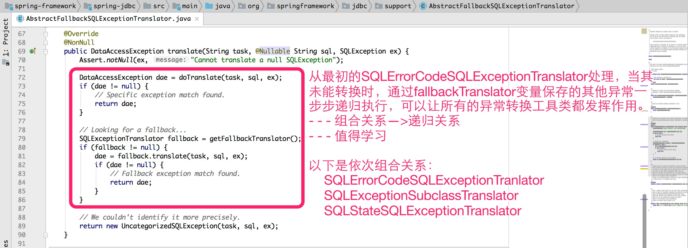

统一的数据访问异常体系
Spring提供的统一数据访问异常体系分两部分：
- 细化SQLException分类：构建了一套语义明确以DataAccessException为基础的数据访问异常体系；
- 异常转换：抛出的数据访问异常转换为DataAccessException，纳入数据访问异常体系内；
一.细化SQLException分类
Spring数据访问异常体系是unchecked exception类型，出发点是一般我们是正常执行SQL的，在遇到异常时其实我们能做的事情有限：捕捉异常，打印日志，终止线程运行。使用unchecked exception类型的好处是接口比较稳定，不受具体的数据访问机制影响。Spring数据访问异常体系部分类图如下：
{kind=link}
二.异常转换
异常的转换也分两部分来讲：
- JDBC异常转换：因SQLException返回的ErrorCode和SQLState在不同数据库厂商之间并未统一，就需要对不同厂商单独解析转换为对应DataAccessException；
- 其他持久化技术异常转换支持：如Hibernate数据访问异常体系转义到Spring异常体系；
1.JDBC异常转换
JDBC异常转换时主要通过SQLExceptionTranslator子类来实现，我们先看下SQLExceptionTranslator类图：
{kind=link}

通过上图大家有没有发现三个实现类之间的关系—组合关系，组合关系在父类AbstractFallbackSQLExceptionTranslator中变成了递归调用，这里充满了智慧(Composite设计模式)。
下图是AbstractFallbackSQLExceptionTranslator部分源代码：
{kind=link}

下面我们认识一个工具类SQLErrorCodesFactory，它在异常转换中发挥着重要作用。在sql-error-codes.xml中通过Bean方式，定义了不同数据库厂商的错误类型与ErrorCode的关系。在SQLErrorCodesFactory（单例模式）实例化时，通过容器获取这些Bean，并维护到自身Map变量中，为SQLErrorCodeSQLExceptionTranslator使用做准备。
下图是-sql-error-codes.xml部分源代码：
{kind=link}
下图是SQLErrorCodesFactory部分源代码：
查看大图
{kind=link}
下面我们通过具体子类SQLErrorCodeSQLExceptionTranslator具体是如何转换的，时序图如下：
{kind=link}
下图是SqlErrorCodeSQLExceptionTranslator部分源代码：
{kind=link}
2. 其他持久化技术异常转换支持
由于各种ORM持久化技术都有一个语义明确的异常体系，所以Spring也需要考虑到这部分的异常转换。下图是对Hibernate的支持，其他ORM持久化技术也有类似支持工具类。
下图是SessionFactoryUtils部分源代码：
{kind=link}
以上就是Spring提供给我们统一的异常体系，是不是亮点很多，大家以后开发中可以借鉴里面的思路。整体感受，规范的重要性。现在数据库事务和异常都讲了，接下来我们看另一个话题：缓存。看看Spring是如何实现缓存框架，也是先从Spring缓存基础设施介绍开始。
备注：
- Composite设计模式：组合模式，简单理解为能组合后能递归调用的程序结构即可，一般书中用文件与文件夹来做比喻。
- Singleton设计模式：单例模式，只允许生成一个实例。
快速导航：